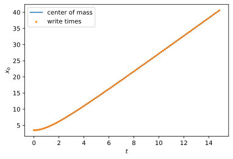
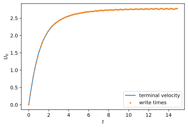

Computing highly accurate mass transfer at rising bubbles
Contents

This work is licensed under a Creative Commons Attribution 4.0 International License.
Computing highly accurate mass transfer at rising bubbles#
This exercise consists of two parts, which are meant to be solved in two individual exercise sessions. In the first part, we perform the two-phase flow simulation of a rising bubble and process the relevant data. In the second part, we create features, train ML models for velocity and shape, and deploy these models in a single-phase simulation.
Part I - two-phase flow simulation and data processing#
Performing the two-phase flow simulation (optional)#
For this application, the solver used in exercise 2 has been modified to output the interface velocity and orientation at regular intervals. Similar to exercise 2, the following commands compile the updated solver and perform the simulation of a rising bubble with ellipsoidal shape:
# start the Basilisk container located at the repository's top level
apptainer shell basilisk.sif
# copy the updated solver to the exercise folder
Apptainer> cp -r test_cases/basilisk_solver/ exercises/
# navigate to the source files and compile the solver
Apptainer> cd exercises/basilisk_solver/
Apptainer> make clean && make
# create a new folder and run the simulation
Apptainer> mkdir ellipsoidal_bubble
Apptainer> cd ellipsoidal_bubble
Apptainer> mpirun -np 4 ../bubble 14 15 0.4361 238.2 &> log.solver
With the above settings, the simulation may take up to two hours to complete depending on your system. You can also modify the Eötvös and Galilei numbers to change the bubble’s behavior. However, keep in mind that the shape should become stable and convex with respect to the center of mass as the bubble reaches a steady state. Alteratively, you can download the latest datasets archive from the lecture’s repository and continue with the pre-computed simulation data.
Loading and processing velocity and shape information#
The relevant data are distributed across two types of files:
the log file log.solver contains the rise velocity and center of mass at every numerical time step
the plic folder contains the position, normal, and velocity vectors at time intervals of \(\Delta \tilde{t}=0.15\)
Log file data#
The log file is a simple text-encoded file with table-like data. There is one row for each numerical time step and the meaning of the 9 columns is as follows:
# time, volume, CoM x, CoM y, CoM z, CoMV x, CoMV y, CoMV z, area
The abbreviations above stand for Center of Mass (CoM) and Center of Mass Velocity (CoMV). Of these columns, we need only time, CoM x and CoMV x. Loading the log file data is complicated due to spurious rows contained in the log file. For example, there are several warning messages right at the beginning of the file:
# print the first 15 rows to the terminal
head -n 15 log.solver
# output
[[30921,1],1]: A high-performance Open MPI point-to-point messaging module
was unable to find any relevant network interfaces:
Module: OpenFabrics (openib)
Host: andre-XP1511
Another transport will be used instead, although this may result in
lower performance.
--------------------------------------------------------------------------
0.00000000 0.08331549 3.50000000 0.29449718 0.00000000 0.00000000 0.00000000 0.00000000 1.57065375
0.00104471 0.08330800 3.50001092 0.29247771 0.00000000 0.00298628 0.00011339 0.00000000 1.57210201
sh: 1: gnuplot: not found
0.00247720 0.08330640 3.50000837 0.29245794 0.00000000 0.00511770 -0.00010853 0.00000000 1.57182925
0.00404440 0.08330699 3.50001471 0.29215884 0.00000000 0.00856596 -0.00001476 0.00000000 1.57162112
The first task is to load and clean the log file. Please do not try to clean the file manually using a text editor, since automated data processing is an essential skill both in CFD and ML. At the end, you should have a data structure containing only three columns. The following links may provide some useful functions of the Pandas library, but it is completely up to you to choose different libraries or to use only standard Python.
pandas.read_csv; pay attention to the options sep, header, names, and on_bad_lines
pandas.to_numeric; use errors=coerce
You can plot center of mass and rise velocity over time to check if the extraction was successful. The plots should look similar to the ones below.
Interface data#
There are 100 snapshots of the interface data located in the plic folder. However, each snapshot is distributed over several files, because each MPI process writes its own output. The snapshot number and the process id are encoded in the filename as points_#######_n###.txt, where the first 6 digits contain the snapshot number with leading zeros and the second 3 digits stand for the process id. For example, the file points_000010_n000.txt contains the data of the 11th snapshot written by process zero.
Each file contains the x and y components of position, normal, and velocity vectors of discrete locations representing the gas-liquid interface.
# x, y, normal x, normal y, velocity x, velocity y
This time, there is no spurious information in the data, but the files contain empty lines, which have to be removed. Moreover, all files belonging to one snapshot have to be parsed individually and concatenated. The order in which the processor files are parsed and concatenated is not important. You may want to use the following two functions as abstractions for loading individual processor files and concatenating them:
def parse_processor_file(path: str) -> pt.Tensor:
with open(path, "r") as f:
# parse lines
return pt.tensor(lines)
def load_interface_snapshot(path: str, iteration: int, np: int) -> pt.Tensor:
p_data = []
for p in range(np):
p_data.append(
parse_processor_file(join(path, f"points_{iteration:06d}_n{p:03d}.txt"))
)
p_data = pt.cat(p_data)
return p_data[p_data[:, -1].abs() < 10]
To parse the lines, you may find the string manipulation methods strip and split helpful. The map function is useful to apply a function to all elements in a list (an iterable) without explicitly writing loops.
Part II - feature creation, model training, and single-phase simulation#
Feature extraction and model creation#
The raw output of the two-phase flow simulation contains points giving the approximate interface position and the velocity vector in these points. Both position and velocity vectors are given in Cartesian coordinates. Based on the raw data, it would be difficult to define a functional relationship approximating the evolution of shape and interface velocity. Instead, it is much more convenient to work with a parametrization tailored to the bubble’s ellipsoidal shape. Therefore, we:
transform interfacial points into a polar coordinate system \((r,\vartheta)\)
split the interface velocity into one component tangential to the surface and one component normal to the surface
The center of mass velocity is already given in a useful form. Note that we only need to approximate the component in rise direction. Execute the lecture notebook to train and export all three models. In the notebooks/output/ folder, there should be three new .pt files:
rad_model.pt - model for the radius
rv_model.pt - model for the rise velocity
tv_model.pt - model for the tangential interface velocity
Note: in case you decide to implement the model training in a separate notebook or script, don’t forget to set the default PyTorch dtype to torch.float64:
# add these lines to the global scope, e.g., after the imports
import torch as pt
pt.set_default_dtype(pt.float64)
Performing the single-phase simulation#
First, boundary conditions, flow solver, and utilities for post-processing need to be compiled. Then the simulation can be executed. These steps are partially automated, such that it is only necessary to execute the following commands:
# starting from the repository's top-level
# if necessary, update the repository
git pull
apptainer shell of2206-py1.12.1-cpu.sif
Apptainer> source setup-env
Apptainer> source /lib/openfoam/openfoam2206/etc/bashrc
Apptainer> cp -r test_cases/single_phase_approach/ exercises/
Apptainer> cd exercises/single_phase_approach/
Apptainer> ./compile.sh
Apptainer> cd simulation
Apptainer> ./Allrun
The simulation takes about 4h to complete.
Post-processing#
We focus only on the post-processing of mass transfer properties. As a first step, open the simulation in ParaView and visualize the three species concentration fields (s1, s2, s3) side by side. To follow the temporal evolution, click the play button or save an animation (a framerate of 10fps works well). Describe the differences you observe in the fields. What differences in the species transport do you observe?
The files globalSh_s{1-3}.csv contain the global Sherwood number at time intervals of \(\Delta \tilde{t} = 0.01\). Load the files and plot all three global Sherwood numbers over time. Can you explain the observed trends? Recall that the Sherwood number is a dimensionless form the species’ integral normal derivative at the surface/interface. Also, revisit the plot showing the bubble’s rise velocity over time.
Congratulations! This completes the seventh and eights exercise session.